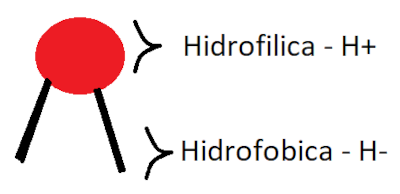

Retornar ao Arquivo
HomePage
Em busca de nossas origens
VideoAula:
Clique Aqui!
Surgimento das primeiras células
Como surgiram?
As células surgiram a bilhões de anos atrás, no mar primordial, nessa época o planeta encontava-se em condições climáticas diferentes das de hoje em dia, de forma que diversas cargas elétricas em forma de raios eram descarregadas no oceano.

Dentro do mar primordial existiam diversas moléculas, em foco nas moléculas orgânicas cuja "cabeça" era 'Hidrofilica', com afinidade à água, enquanto suas "pernas" eram 'Hidrofobicas', repeliam a água. Essas moléculas recebiam as descargas elétricas e começavam a se agrupar formando assim as micelas:
Essas micelas formariam eventualmente a membrana (cito)plasmática, uma bicamada fosfolipídica, que é a responsável por separar a célula de seu meio externo.
Essa formação daria surgimento ao primeiro tipo de célula existente as Células Procarióticas, posteriormente essas células iriam ter uma relação de endossimbiose, uma relação no qual um organismo vive dentro de outro, através da fagositose, englobamento de partícula pela membrana plásmatica e digestão intracelular, para no final formar o outro tipo de célula, a Célula Eucariótica.
Tipos celulares:
Células Procarióticas
- Definição:
A célula procariótica é o tipo celular mais simples e biodiverso, sendo composta exclusivamente por bactérias, nas quais o material genético é espalhado sobre si e facilta a troca "informações genéticas", sendo esse o motivo pelo qual as bactérias se reproduzem de forma rápida.
- Estrutura:
- Composição:
- Membrana Plasmática/Plasma Membrane: Revestimento externo, de uma bicamada forfilipídica, que separa o interior da célula do ambiente ao seu redor;
- Citoplasma/Cytoplasm: Citosol gelatinoso no interior da célula, formado por água, várias proteínas, enzimas e pequenas moléculas;
- DNA/Cromossomo: Material genétivo da célula;
- Ribossomos/Ribosomes: Sintetizadores de protéinas;
- Cápsula/Capsule: "Parede" externa que protege a célula;
- Fímbrias/Pili: Utilizadas para a fixação em células hospedeiras e outras superfícies;
- Flagelo/Flagellum: Estruturas que auxiliam no movimento das células/bactérias;
- Nucleoide: Área da célula que contém o DNA espalhado;
- Parede Celular/Cell Wall: Camada de proteção, mantém a célula em forma e previne desidratação.
Células Eucarióticas
- Definição:
A célula eucariótica é o segundo/último tipo celular que compoe uma parte dos seres vivos, sendo mais complexa e menos biodiversa que as procarióticas, composta pelas celúlas vegetais e animais.
- Tipos
- Célula Animal
- Estrutura:

- Composição:
- Núcleo: Lugar que armazena o matérial genético e comanda as ações e processos que ocorrem dentro da célula;
- Endoplasma Rugoso: Carregam ribossomos aderidos a si, então possuem a capacidade de armazenar e sintetizar proteínas;
- Endoplasma Liso: Responsável pelo transporte de substâncias, síntese de lipídios, carboidratos e determinados hormônios e a degradação de substâncias tóxicas;
- Lisosoma: Realizam a digestão intracelular e a autofagia (reciclagem do material orgânico da própria célula);
- Membrana Plasmática: Revestimento externo, de uma bicamada forfilipídica, que separa o interior da célula do ambiente ao seu redor;
- Complexo Golgi/Golgiense: Uma organela com uma estrutura achatada e delimitada por membranas, chamadas de cisternas, sendo polarizado em duas faces cis e trans que são responsáveis pelo processamento de proteínas e lipídios, escolher e enviar substâncias, além de formar os lisossomos, acrossomo, membrana plasmática e a membrana que cerca o núcleo;
- Mitocôndria: Responsável pela respiração celular, processo de obtenção de energia para a célula;
- Citosol: Material gelatinoso no interior da célula que a preenche, formado por água, várias proteínas, enzimas e pequenas moléculas;
- Peroxissomos: Decomposição de substâncias tóxicas;
- Centríolos: Fazem o processo de divisão celular, um processo no qual uma "célula-mãe" produz "células-filhas".
- Célula Vegetal
- Estrutura:
- Composição:
- Núcleo: Lugar que armazena o matérial genético e comanda as ações e processos que ocorrem dentro da célula;
- Endoplasma Rugoso: Carregam ribossomos aderidos a si, então possuem a capacidade de armazenar e sintetizar proteínas;
- Endoplasma Liso: Responsável pelo transporte de substâncias, síntese de lipídios, carboidratos e determinados hormônios e a degradação de substâncias tóxicas;
- Membrana Plasmática: Revestimento externo, de uma bicamada forfilipídica, que separa o interior da célula do ambiente ao seu redor
- Complexo Golgi/Golgiense: Uma organela com uma estrutura achatada e delimitada por membranas, chamadas de cisternas, sendo polarizado em duas faces cis e trans que são responsáveis pelo processamento de proteínas e lipídios, escolher e enviar substâncias, além de formar os lisossomos, acrossomo, membrana plasmática e a membrana que cerca o núcleo;
- Mitocôndria: Responsável pela respiração celular, processo de obtenção de energia para a célula;
- Parede Celular: Camada de proteção junto da membrana plasmática, mantém a célula em forma e previne desidratação;
- Peroxissomos: Decomposição de substâncias tóxicas;
- Centríolos: Fazem o processo de divisão celular, um processo no qual uma "célula-mãe" produz "células-filhas";
- Cloroplastos: Convertem a luz solar em energia química, permitindo que as plantas realizem fotosíntese, e compoem os pigmentos verdes. Possuem um DNA próprio, são constituídas de membranas lipoproteícas (composto ôrganico feito por proteínas) e são preenchidas por um fluído chamado estroma, que possue discos chamados de tilacoides que formam pilhas denominadas de granum;
- Cromoplastos: Plastídios (organelas citoplasmáticas) que colorem as plantas, possuindo três tipos os xantoplastos (pigmentos amarelos), os eritroplastos (pigmentos vermelhos) e os cloroplastos (pigmento verde);
- Vacúolos de Suco/Vacúolo Central: Estruturas formadas por uma única membrana (tonoplasto) e possuem um líquido em seu interior chamado de suco celular. Eles possuem a função de manutenção do equilíbrio osmótico, entrada e saída de água das membranas, e do armazenamento de substâncias;
- Glioxissomos: Possue a função de garantir a transformação de lipídios em glicídios.
O estudo das células e sua evolução
Helmont e Redi
Jan Baptista van Helmont (1580-1644) foi um pesquisador que defendia a abiogênese e buscou provar isso em um de seus experimentos que constuia-se em deixar roupas sujas com grãos de trigo por 21 dias para que ratos possam "surgir" do nada. Em contraposição o italiano nascido em Arezzo, Francesco Redi (1626-1697), buscava provar que seres vivos não poderiam surgir a parir do nada, a biogênese, então ele faz um experimento no qual um pedaço de carne é posto em 3 diferentes frascos, um aberto, outro tampado com gaza e o último tampado completamente, no primeiro pote ele observou o surgimento de larvas, já no segundo ele viu que as larvas e ovos ficam em cima da gaza mortos, enquanto no último a carne apenas apodrecia e não havia o surgimento de nenhum ser vivo a partir do nada, entretanto com o surgimento da microscopia e a descoberta de microrganismos que poderiam surgir do "nada e em qual qualquer lugar" sua ideia seria contrariada.
Robert Hooke
Robert Hooke (1635-1703) foi um cientista e biólogo inglês de origem simples e com uma fraca condição física que proporcionou diversos avanços a microbiologia com seu descobrimento da célula em um de seus experimentos. O inglês fazia parte de uma organização de pesquisa composta pela aristocrácia chamada de 'Royal Society', sendo um faz tudo da organização sempre posto em uma posição inferior aos demais o que junto da reputação da organização de apenas observar pequenas coisas utilizando dos microscópios fizeram que ele, embora tenha descoberto a célula e tivesse excelentes habilidades de desenho e documentação de suas descobertas, fosse removido de certa forma da história da ciência.
Em seu principal experimento, Hooke analisava uma cortiça (pedaço de materia morta da materia que é compactada) utilizando um microscópio e em sua análise ele observou que a estrutura do objeto assemelhava-se a vários quartos mosteiros conhecidos na época como "celas", dando origem assim ao termo célula. Outra coisa observada nesse experimento é a cortiça tem suas propriedades e forma devido a ser matéria orgânica morta comprimida, ou seja um aglomerado de céluas vegetais mortas nas quais restavam apenas a parede celular.
Anton van Leeuwenhoek
Anton van Leeuwenhoek (1632-1723) foi um comerciante de tecidos, cientista e construtor de microscópios holândes que criticava a ideia da abiogênese, ele foi inspirado nas descobertas de Robert Hooke e em uma de suas observações ele viu em seus microscópios pela primeira vez na história o que chamamos hoje de bactérias e microrganismos que na época eram chamados por ele de "animálculos".
Biogênese VS Abiogênese
Biogênese e Spallanzani
A biogênese é uma linha de teorias e ideologias cientificistas que diz que a vida surge a partir de uma origem animada, ou seja de a partir de outros seres. Um grande defensor desta teoria era Lazzaro Spallanzani (1729-1799), um sacerdote católico, fisiologista e estudioso das ciências naturais, que nasceu em Scandiano na Itália, ele buscava fortalecer a ideia de que a vida necessitava de um meio e fator, não podendo surgir expontaneamente, que devido ao surgimento da microscopia teria sido contrariada. Para isso Spallanzani fez um experimento em que um recipiente com um caldo contaminado com microrganismo era fervido e depois fechado, mostrando a completa eliminação desses pequenos organismos que não poderiam surgir novamente já que o recipiente estava fechado.
Abiogênese e Needham
A abiogênese era uma linha teórica e ideológica religiosa que dizia que a vida poderia surgir apartir de materia inanimada, ou seja apartir do nada. Um grande defensor dessa teoria era o naturalista nascido em Londers, Reino Unido, John Needham (1713-1781), que buscava contrariar todas as outras teorias que iam contra a abiogênese. Para isso Needham fez um experimento no qual um caldo contaminado por microrganismos era posto em um recipiente e fervido, depois deixado aberto, devido a isso os microrganismos puderam surgir novamente em uma "suposta materia inanimada".
Needham VS Spallanzani
Devido a ambas teorias totalmente opostas de ambos os estudiosos da mesma época (século 18) eles se viram em um duelo para comprovar quem estava certo. Neste duelo ambos fizeram o mesmo experimento com diferentes procedimentos finais, Needham deixando o recipiente aberto enquanto Spallanzani deixou o recipiente fechado, neste duelo embora Lazzaro tenha comprovado sua teoria com o desaparecimento total dos microrganismos a vitória foi de Needham devido a argumentar ideias de uma suposta 'energia vital' que daria origem a vida e essa ideia foi a mais aceita, pois na época a linha de pensamento da abiogênese era a mais aceita.
Louis Pasteur
Louis Pasteur (1822-1895) foi um cientista francês muito importante na história da química, medicina e microbiologia, devido a seus estudos de microrganismos que ocorreram devido a uma necessidade da comunidade francesa pautada economicamente na vinicultura (produção de vinhos). Esses estudos buscavam investigar os motivos por trás do processo de azedamento do vinho e da cerveja e utilizado microscópios ele conseguiu identificar o organismo responsável um bactéria.
Perante isso Pasteur cria um método que constituia em aquecer um líquido lentamete para sua esterilização e depois seu deposito em vidrarias adequadas e fechadas, este processo ficou conhecido como pasteurização. Entretanto esta não foi a única contribuição de Louis para a ciência, ao percorrer de sua vida ele ficava analisando esses pequenos organismos, apontando suas relações com as doenças e descobrindo as vacinas, como a antirrábica usada no combate à hidrofobia.
Vida ou Não? És a questão.
Teoria Celular
A Teoria Celular foi feita por Matthias Schleiden(1804-1881) um botânico alemão e Theodor Schwann (1810-1882) um médico e fisiologista alemão, juntos eles criaram um teoria que dizia que:
- Todos os organismos são compostos por uma ou mais células;
- A célula é a unidade básica da vida;
- Toda célula vem de células preexistentes.
O Vírus, é um ser vivo?
A resposta dessa pergunta é talvez, até hoje ainda existem muitos debates relacionados se podemos ou não considerar os vírus sendo um ser vivo ou não, mas você sabe do porquê muitos pensam que ele não é um ser vivo?
O principal fator é de que esses pequenos agentes infecciosos não apresentam uma estrutura celular, embora possuam ácidos nucleicos (substâncias ácidas presentes nos núcleos celulares) como material genético, porém ao sair desse tema de estrutura celular eles ainda podem se reproduzir e passar por processos evolutivos como outras células e bactérias. Essa contaposição nos leva a pensar também no tamanho desses "seres" que é menor do que qualquer bactéria, além de que seus genomas (sequência de DNA) apresentam poucos genes.
Assim como dito, ainda hoje a resposta é indefinida há muitos que acreditam que ele não é um ser vivo, que os vírus tiveram um ancestral em comum com as bactérias mas ao longo do tempo foram mudando e se tornaram parasitas ou que eram mais complexos e foram regredindo sua complexidade genômica, até mesmo que é necessário criar um novo ramo na árvore da vida para os caracterizar. Essa diversidade de ideias que existem embora a principal seja de que todo ser vivo necessita de uma estrutura celular, só nos demonstra como na ciência a verdade nunca vai ser absoluta, não há como bater o martelo definitivamente, mas que sempre há uma busca para compreender o que já conhecemos.
Rudolf Virchow
Rudolf Virchow (1821-1902) um médico, antropólogo, patologista, pré-historiador e biólogo, é considerado o pai da patologia, o estudo das alterações nas estruturas das células e órgãos e suas relações com o surgimento de doenças, pois em sua época o estudo das doenças não era tão avançado e Virchow foi o primeiro a demonstrar que as células doentes derivam-se das células vivas/saudáveis, de forma que a ideia de que os germes eram causadores de doenças proposta por Pasteus não era aceita pelo mesmo.
O mesmo foi responsável junto de seu colega Benno Reinhardt, uma revista médica conhecida como "Virchow's Archive" que inclusivimente foi umas das principais publicações médicas européias, esta revista abrangia diversos temas, somente aceitando trabalhos originais e tinha como o seu público alvo todos, desde uma pessoa que não sabia nada sobre o assunto até um conhecedor, pois Rudolf segundo ele não adianta mostrar os avanços científicos apenas na forma de teses. É preciso tornar o conhecimetno acessível. A ciência avança a passos rápidos, e a imprensa precisa se adequar a isso
.
Retornar ao Arquivo
HomePage